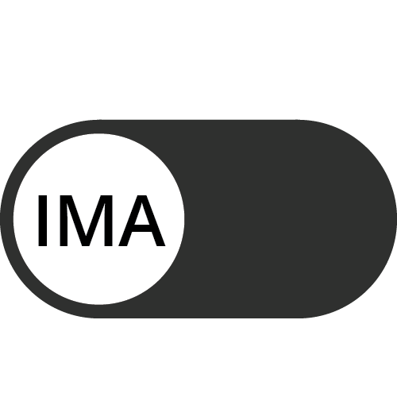
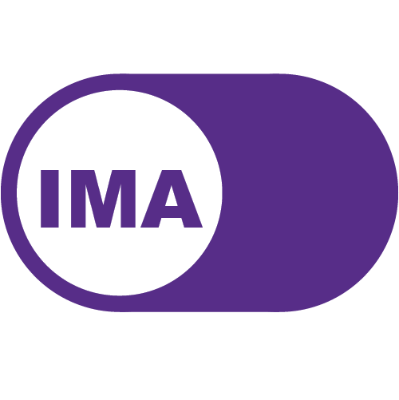

Projects
VentureOut 2020
VentureOut is an NYC startup accelerator that bridges the gap between global talent and entrepreneurship opportunities in the U.S. As a video post-production intern at VO, I researched, pitched, produced, and executed everything in between to create ~55 new pieces of virtual interview content, advising entrepreneurs and marketing VentureOut as a thought-leader in the startup space. Above, Bonnie Morlak, Entrepreneur-in-Residence, opens up about his past burnout and depression to remind entrepreneurs that mental health is real, serious, and imperative.
DCTV 2019
DCTV is a non-profit organization that teaches young adults the videography skills they need to tell important stories affecting their communities. I contributed to the shooting and editing of DCTV's Youth Media Department's behind the scenes video for their summer intensive program.
June's Financial Advisory Brand
Context: June, a personal contact and financial advisor, offered to set aside time to guide me through financial basics. Realizing that many upcoming college graduates could benefit from June’s financial info session, I suggested a programming collaboration with NYU CAS’ Student Council. June also needed help redesigning her presentation slides and LinkedIn.
Role: Marketing and Design Consultant, Event Coordinator, Graphic Designer
Goals:
- Clarify June’s brand identity
- Ensure the successful planning and marketing of June’s undergraduate event
- Create on-brand graphic assets for presentation slides, documents, instagram and facebook
Deliverables:
- Brand Guidelines Book
- 4 Presentation Theme Templates
- 4 Instagram Posts
- 4 Facebook Posts
- 1 Document Template
- Redesigned LinkedIn Page
Brand Discovery:
A brand is your social identity. What do you want others to know about you? What do you want others to see you as? What do you stand for? What makes you unique? Branding is about managing the perceptions people have about you or your company, using communication tools like logos, visual language, tone, emotive language etc. A good brand uses these tools coherently across all touch points to convey the brand's benefits, evoke a positive emotional response, and to differentiate itself from competitors, thereby making the brand relevant to follow, buy from, or invest in.
Brand discovery is the process of gathering information on your brand’s company, customer, and industry to inform the most competitive, best-fitted brand strategy for you. Data can be gathered from respected research firms, purchased from market-specific research outlets, sourced from trade publications, analyzed from internal social media metrics, collected using survey tools, or scraped real-time on the internet. The data is then analyzed to understand who your target customers are, how they think and what they want (in turn how you communicate what you provide), how your competitors have been enticing your targets and filling your targets’ needs, and how your brand can appeal to your targets better. For June’s purposes, I will be conducting a brief brand discovery, but here is an amazing article that dives deeper into customer and competitive research.
Discovery meeting
*Disclaimer* I had the advantage of knowing June personally, however, this demonstrates how important it is to know your client and spend a day with them (ethnographic research). A personal brand should feel like your client’s own skin, while empowering your client to speak his/her/their voice.
I first bulleted salient points about June’s personality. This could be called the start of the ‘understand the company phase’. Get to know the person/firm’s core values and interview all stakeholders (only June here) on what they think the company does. Make sure everyone is on the same page as to what they want the company to represent. Key points I picked out for June:
- Confident, knows her stuff
- Generous/giving when it comes to financial advice
- Genuinely eager to help with what she knows
- Loves food, is a good cook, likes cute things
Product: Next, I considered what her business is, her product, her short and long term goals. June provides financial advice, therefore, she needs to be professional. But personal finance is a very intimate matter, and the trust she builds with her clients needs to last. Trust can be built through more than just professionalism, and June's story as a mom trying to educate herself and her daughter to ensure her daughter is financially prepared to succeed makes June a caring, trustworthy advisor.
Need/Pain point: I discovered June's pain point when I saw her struggle with technology used for design and when she reached out to me to help design a new set of presentation slides. She also needed graphic assets that were consistent and more than standard, ugly sample designs.
Solution: My goal was to make it super simple for June to use my templates. My design solutions needed to be appealing for 2021, easy to use, and flexible enough for her needs.
Customer research
I reached out to some of June’s past clients to get a sense of:
- Why did they reach out to June in the first place (initial attraction point)?
- What did they need the most help with (clients’ pressing problems, emotional investment)?
- What do others have to say about June (who is June to them)?
- What do others want when it comes to financial advisors (qualities June needs to display)?
- What do others think June’s strengths are?
- What did they want more of (or less of) from June (improvements)?
- Why would they choose June over other advisors (June’s competitiveness)?
As an added benefit, I asked for permission to use their words as testimonials for her LinkedIn page.
Customer research can be done very meticulously and procedurally. Data on customers’ demographic, behavioral, transactional, and psychographic information can be analyzed. While this doesn’t apply to June, site traffic, visits and repeat visits, remarketing, PPC campaigns, email and CRM data, social media, and marketing data can also be analyzed.
Demographically, June’s past clients are age 40+, Asian, married with family, middle class, New Yorkers. After multiple one-on-one meetings, they purchase one or two hefty financial products when they feel the need to plan for their kids or when they’re thinking about retirement. Among the insurance policies June sells, Index Universal Life, Annuity, and Long Term Care are popular. June has a very niche audience, found mostly through her own network. However, June’s focus on middle class family members is a potential avenue of expansion.
Educating young adults and parents with little financial knowledge comes naturally to her as a mom turned financial advisor. Clarifying the characteristics of June’s current audience gives her a better idea of ideal customers she can reach out to beyond her network. This also informs the design of her brand, which needs to appear friendly and approachable to middle class family members who aren’t familiar with financial jargon.
Competitive Research
At the moment, June finds most of her clients from connections and word of mouth. One-to-one financial advising cases often come through personal networks, are personalized to each client, and are difficult to scale. June doesn’t have much data on her clients, nor is she looking to find leads digitally, therefore, competitive research was minimal and inconsequential.
Story/Positioning:
For English or Mandarin speaking New York middle class family members, June provides financial advice on insurance policies in an approachable way that places the client’s concerns, goals, and wellbeing first, and gives the client the tools to confidently make financial decisions.
Initial Design Research:
First, research was done on LinkedIn top voices in Finance and top finance youtube channels. Most professionals wore neutral professional attire for their profile photos and featured recent achievements or company related graphics in their cover photos. An interesting trend was that the younger professionals (especially on youtube) appeared to be more design conscious, unique, or liberated in their aesthetics. For example, Graham Stephan shows off his fancy car, The Financial Diet adds millennial pops of color, and Nate O’Brien sticks to his minimalist brand. In their bios, Campbell Harvey, Raghuram Rajan, and Oghenerukevwe Odjugo take the most formal approach, referring to their multitude of scholarly accomplishments in the 3rd person. The closest professional in likeness to June would be Denise Chisholm, who is inviting, more personal, and, “a proud mom of two….”
June’s brand should be professional, but not rigidly professional. There should be an element of warmth that shines through her role as a mother and advisor. Her cover photo can be of the Transamerica logo, the company she works for, or a graphic about learning and finance. Her profile photo should sport her in formal attire, but at her desk or under a tree to make it more inviting. Unlike the finance youtubers who are young millennials, speaking to other millennials/gen-Zers in a relatable way, using generational slang, June is older and not part of that culture. Therefore, to have her use a more balanced tone and appeal to parents first (then as an advisory figure to their children) would make more sense.
Designing an IMA Logo 2020
Case Overview: Interactive Media Arts (IMA) is a new New York University (NYU) undergraduate program that teaches students to use art, technology, media, and design to create interactive, creative experiences. Because it's a new program, IMA lacks a visual identity that encompasses its unique interdisciplinary approach and speaks to its learners' extraordinary potential. My task as a designer was to create a logo that represents IMA's brand.
Problem Statement: Design a logo that best represents IMA's incorporation of interaction, media, and arts, students' creativity and collaboration, and the community's ability to create extraordinary new opportunities.
Brand Audit: First, a brand audit was done with students in the Design Fundamentals class and from my personal experience with IMA. After generating a word web, salient associations were pulled out and focused on. My primary design goals were to communicate IMA as a place of potential, expression, design, and digital experiences.
Ideation: Sketching was used as a tool to explore as many concepts as possible. I gravitated towards designs that incorporated references to the digital world (cursors, switches, buttons), but which also communicated the potential to create something new, something great.

First drafts: 4 concepts were chosen for critique and further conceptualization. (From top left), 1 was chosen for its reference to digital switches, which makes users want to interact/slide the button and speaks to the opportunities users open up when attending the program. The logo works at different scales and can even be programmed to create dynamic experiences on the web. 2 was a homage to the subway system that connects NYC together, and the collaboration between students at IMA. 3 plays on the idea of a blinking text cursor as the gateway to expression. 3 also has potential to be pushed further, using the acronym IMA as a pun, dynamically changing the logo to: I'm an artist, I'm a hacker, I'm a designer etc. 4 maintains legibility yet abstracts the type IMA into an electric circuit board. Everything is connected, which is a double representation of IMA's community and also that connectivity is integral to working digital experiences. 4 can use color gradients to emphasize the moving of electrons and the generation of sparks and new ideas.
Color pass: A variety of colors were tested with first draft concept 1. Primary colored gradients were tested to symbolize IMA's playfulness and relevance to modern times (Instagram popularized the gradient trend). NYU purple was chosen as a dominant color to stay on brand. Contrasting colors were tested but discarded due to the resemblance to the Golden State Warriors. User testing was done, with students from Design Fundamentals commenting on their favorite button and why.
Final result: The purple, white, purple NYU color palette was chosen because it most clearly communicated that it was a digital switch and because it remains on brand for NYU.
More
Connect with me on LinkedIn to hear more about my other video, design, art, and photography projects.